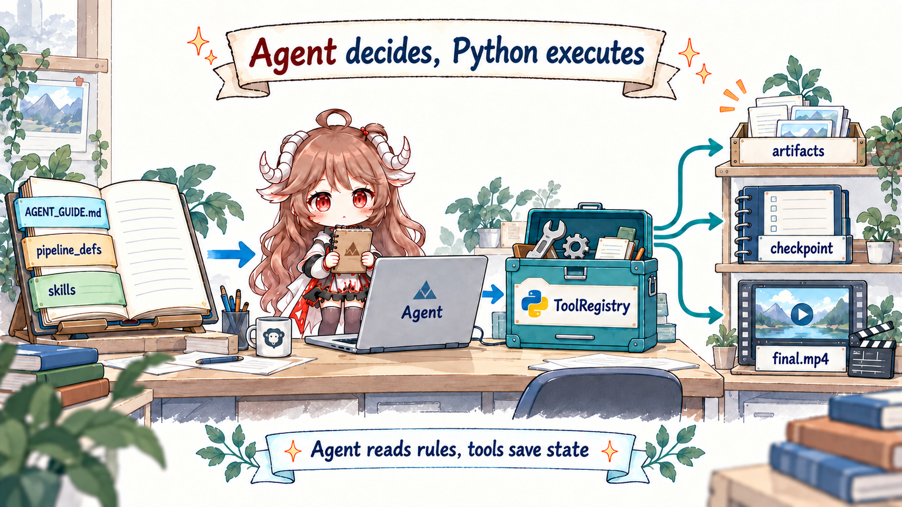
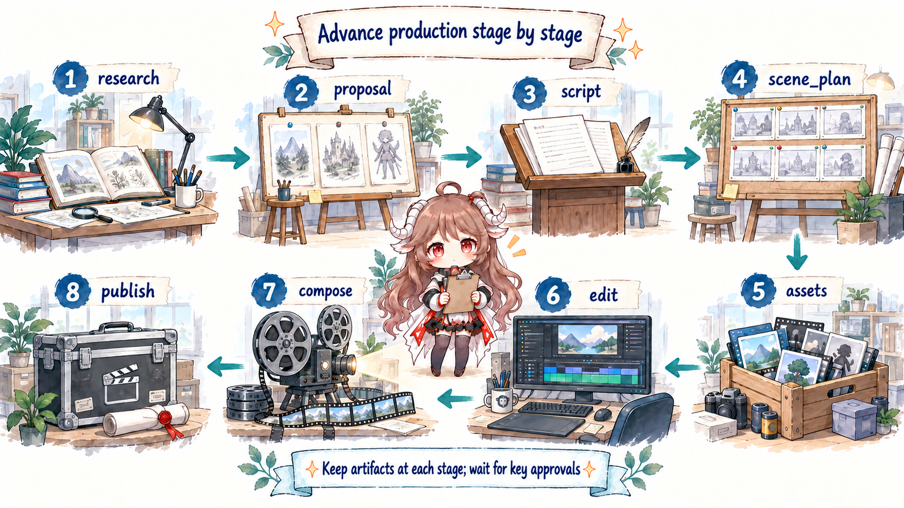
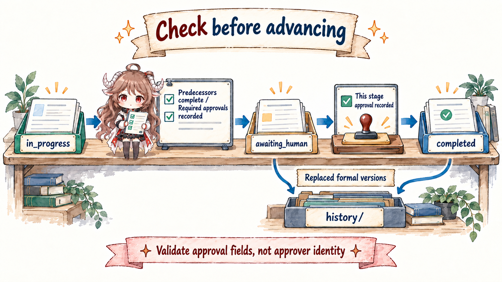
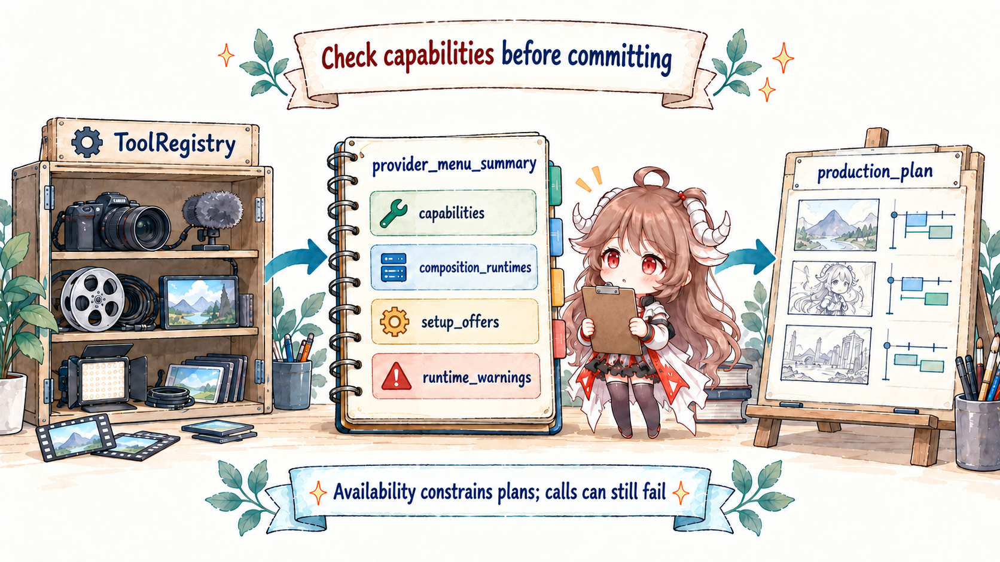
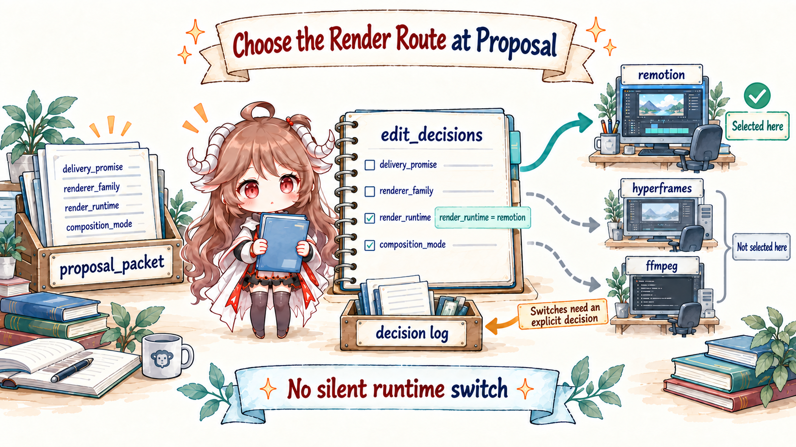
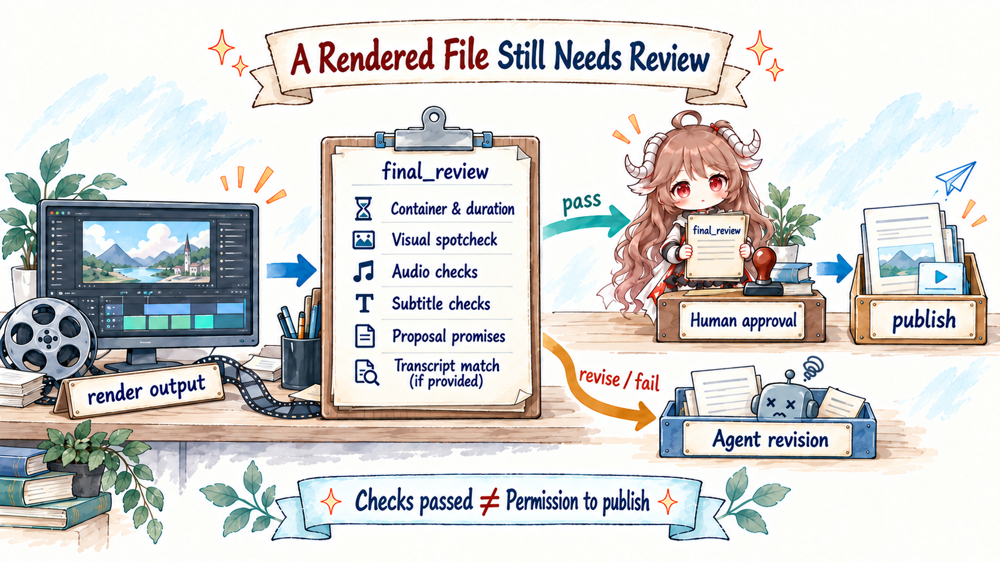

The previous chapter used an AI music video to explain how a long-running job keeps an identity after a process disappears.
This chapter switches to a ninety-second animated explainer, “How a City Wakes at Night,” because OpenMontage's
animated-explainer manifest exposes the full route from research and proposal through compose and publish.
The two examples carry the same production pressure without pretending to use the same business pipeline. Here, a coding agent reads repository rules,
produces structured artifacts, calls tools, waits at approval gates, and leaves recovery points.
Reading goal. Follow the same ninety-second “How a City Wakes at Night” animated explainer. By the end, you should be able to retell the path from pipeline and manifest through preflight, stage-director instructions, artifacts, policy-driven checkpoints, render runtime, and final review—and distinguish instructions the agent is expected to follow from states Python will reject.
What the code proves. This article is pinned to source snapshot c36e412. YAML manifests and Markdown skills are operating instructions the agent must read and follow. Only the schema checks, rejection of unapproved completion, file writes, tool discovery, and render routing explicitly linked to Python below are enforced by code. There is no separate Python orchestrator silently playing executive producer.
1. Why one prompt is not a production system
A model could begin immediately from “make a ninety-second animated explainer about how a city wakes at night”: draft narration, call image or video APIs, and concatenate an MP4. Yet the costliest mistakes often precede rendering. The topic may be misunderstood; three supposed concepts may be one idea with new titles; the selected provider may not be configured; or a promised motion-led piece may silently degrade into panning stills after a renderer failure.
Before source names appear, imagine the request as a rough production card. The user supplies a topic, audience, a few neon-city references, and the idea that electricity, transit, and the night economy should explain how the city lights up in layers. They expect a sourced, ninety-second landscape video with narration, captions, and real motion. The budget is limited. This card is not ready to execute: it does not say who approves direction, what each stage hands off, which capabilities exist on this machine, or what proves the final file kept its promise.
Job: 90-second “How a City Wakes at Night” explainer
Inputs: topic, audience, references, destination platform
Promise: sourced explanation, real motion, narration, captions
Undecided: concept, provider, render runtime, cost
Hard stops: proposal, script, scenes, assets, publication approval1.1 Five terms in plain language
A pipeline is a production route—“make a generated animated explainer”—not a model. A manifest is the route sheet: stage order, required inputs and outputs, permitted tools, review criteria, and places that must wait for a person. A director skill is the working handbook for one craft, such as research, proposal writing, scene planning, or final review.
An artifact is the formal handoff between crafts: a research brief, proposal packet, script, scene plan, or asset inventory.
It is a project fact stored in a file, not a promise hidden in chat. A checkpoint records where the run stands:
in progress, waiting for a person, or complete, plus the artifacts that justify that state. A gate is the rule that prevents
awaiting_human from becoming completed until approval really arrives.
1.2 The missing object is responsibility, not prompt length
| Responsibility absent from one prompt | Failure when missing | Where OpenMontage handles it |
|---|---|---|
| Current stage and input artifacts | A revision cannot tell whether to return to script, scenes, or assets. | pipeline_defs/*.yaml |
| Creative decisions and alternatives | A provider, voice, or renderer changes with no explanation. | proposal_packet and decision_log |
| Human approval | Expensive assets exist before the user sees the wrong direction. | Manifest gates and checkpoint status |
| Actual capability | The plan assumes an absent runtime or API key. | ToolRegistry preflight |
| Delivery promise | A successful render is mistaken for a completed product. | final_review and publish approval |
OpenMontage Rule Zero narrows the entry point: every production selects a pipeline, reads its manifest, completes preflight, and reads the current stage-director skill. The purpose is not file ceremony. It requires the agent to work through explicit stages, artifacts, and approval rules.
Keep four questions in view as source identifiers accumulate:
- What decision is the agent making now, and on whose behalf?
- Which artifact did it read, and which artifact changes afterward?
- Is the transition a Markdown discipline, or will Python reject a violation?
- If the session vanishes now, what record tells the next session where to resume?
2. The division of work: the agent chooses the next step; Python acts and saves state
The repository project context assigns orchestration, creative decisions, review, and stage transitions to the agent; Python supplies callable tools and persistence. Executive producer, director, and reviewer are therefore roles encoded primarily in Markdown, not long-running Python services.
OpenMontage is not, by itself, a studio website turning in the background. The ordinary operating scene is a coding-agent session that can read the repository
and call its tools. The agent opens YAML and Markdown under the rules in AGENT_GUIDE.md, then explicitly invokes Python tools and the checkpoint utility.
Without that agent, repository files do not advance themselves from research to publish. A replacement session must begin by reading the project workspace.
“Control plane” is concrete here. The agent decides which instructions to read, which choices to present, which tool to call, and whether a failure requires repair, revision, or escalation. Python generates media, mixes audio, renders video, and writes checkpoints. The agent need not implement codecs; Python does not decide whether “three systems waking in layers” explains the topic better than “follow one night-shift driver.”

AGENT_GUIDE.md
-> select animated-explainer
-> read pipeline_defs/animated-explainer.yaml
-> run ToolRegistry preflight and present real capabilities
-> read the current stage-director skill
-> produce a schema-valid artifact
-> self-review through the reviewer skill
-> save state through checkpoint utility and reject unapproved completion
-> enter the next stage or wait for human approval
Put the explainer back into that loop. The manifest says proposal is current, so the agent reads the proposal director.
That handbook requires at least three genuinely different concepts grounded in research, with available providers, costs, and runtimes made explicit.
The agent writes proposal_packet; the reviewer asks whether the alternatives are merely renamed copies; the checkpoint utility validates the shape
and writes awaiting_human. Only after the user chooses “electricity, transit, and nightlife take over the frame in sequence”
can the proposal become completed and script begin.
This layering fits a coding agent. Stable rules can be versioned and reviewed by people and models; fast-changing providers appear through a registry; only boundaries that cannot rely on obedience become code. The tradeoff is equally clear: if the agent skips instructions, context drifts, or the host cannot call tools reliably, Markdown will not seize control like an in-process orchestrator.
2.1 Fixed production rules and current capabilities must remain separate
| Layer | Question | Representative files |
|---|---|---|
| Production rules | Which stages, artifacts, and approval pauses are mandatory? | AGENT_GUIDE.md, pipeline_defs/ |
| Working method | How should this role research, propose, write, or review? | skills/ |
| Capability reality | Which providers, runtimes, and dependencies exist now? | tools/tool_registry.py |
| Project facts | What was approved, completed, and produced? | Artifacts and checkpoints under projects/<id>/ |
2.2 One stage transition contains six actions
- Locate: find the first incomplete stage from checkpoints.
- Load: read the manifest, current director skill, and approved upstream artifacts.
- Judge: make a creative or execution decision under those instructions.
- Act: call a registered Python tool when the stage needs a real side effect.
- Record and check: write a schema-valid artifact and review it against stage criteria.
- Hand off: write the checkpoint required by the manifest; stop at
awaiting_humanwhen approval is required, otherwise advance.
This sequence also shows which component catches which failure. Loading instructions and exercising judgment depend on the agent following the operating guide. Artifact validation, rejection of unapproved completion, atomic writes, and render routing are enforced by Python. Remove the Markdown and tools remain without a production method; remove Python and the production method remains without reliable validation, state saving, or media execution.
3. A manifest does not execute video; it defines an auditable route
The main path for this animated explainer is
animated-explainer.yaml.
It declares research → proposal → script → scene_plan → assets → edit → compose → publish,
plus each stage's inputs, outputs, tools, review focus, success criteria, and human-approval policy.

3.1 Walk the route once in execution order
Before drilling into classes and fields, follow one production from left to right. Each row answers the same questions: what the agent does, which project fact remains, and what permits the next transition. Preflight happens before a creative promise; later sections return to the checkpoint and rendering mechanisms in depth.
| Moment | Agent action | Project fact left behind | Advance condition |
|---|---|---|---|
| Select route | Match the specific request to animated-explainer and read its manifest. | project.json names the project and pipeline. | The route fits the requested product. |
| Preflight | Discover tools, provider configuration, and composition runtimes. | A human-readable capability menu; no creative promise yet. | Missing capabilities are explained or configured. |
| Research | Study existing coverage, data, audience questions, and viable angles. | research_brief. | Sources, data points, and angles meet manifest criteria. |
| Proposal | Turn research and capability reality into three concepts, costs, and a production plan. | proposal_packet and decision_log. | The user approves concept c2, providers, and runtime. |
| Script | Write the approved direction as timed narration with performance cues. | script. | The user approves wording, duration, and structure. |
| Scene plan | Translate script sections into contiguous scenes and required assets. | scene_plan, including scene-04. | The user approves the storyboard. |
| Assets | Call image, video, TTS, and music tools by scene and record cost. | asset_manifest and partial checkpoints. | Files exist, style is coherent, and the user approves the filmstrip. |
| Edit | Arrange asset IDs, captions, music, and transitions on a timeline. | edit_decisions. | No gaps, valid references, promise carried into compose. |
| Compose | Render with the approved runtime and inspect the real output. | render_report, final_review, and MP4. | The output passes required checks. |
| Publish | Prepare the video, metadata, and thumbnail concept as an export bundle. | publish_log. | The user gives final publication approval. |
The reusable idea is not the number of stages. Every handoff becomes a named artifact. A proposal is not “let's use direction B” buried in chat;
proposal_packet requires multiple concepts, a production plan, costs, and approval. Compose returns not only a path,
but render_report and final_review. Downstream stages read artifacts rather than relying on implicit memory from a long conversation.
3.2 Stage directors define how; schemas define the minimum shape
The manifest says to produce a proposal. The proposal-director skill teaches the agent how to make alternatives genuinely distinct and explain tradeoffs.
In parallel, the
proposal schema
turns structural completeness into a machine check and requires an explicit render_runtime.
The three layers cooperate during proposal. The manifest says research is required, proposal and decision log must be produced, and the stage waits for a person.
The director skill requires concepts that differ in hook, narrative structure, and visual approach. The schema can check shape and enums;
it cannot tell whether three titles hide the same idea. A schema file sitting in the repository is not enforcement by itself:
validate_checkpoint()
calls the artifact validator while writing state, so missing canonical artifacts and invalid fields are actually rejected.
{
"selected_concept": {
"concept_id": "c2",
"rationale": "Electricity, transit, and nightlife explain the city waking in layers"
},
"production_plan": {
"pipeline": "animated-explainer",
"renderer_family": "cinematic-trailer",
"render_runtime": "hyperframes",
"composition_mode": "atelier",
"delivery_promise": {
"promise_type": "motion_led",
"motion_required": true,
"tone_mode": "cinematic",
"quality_floor": "presentable"
}
},
"approval": {
"status": "approved"
}
}This is a reduced teaching shape, not a complete valid artifact. The important move is separating direction, technical runtime, authoring mode, and delivery promise. A later renderer change can then be classified as an implementation adjustment or a silent change to the approved product.
3.3 Follow one scene through the artifact chain
Stage names still look like independent checklist items until one scene travels through them. Suppose research shows that electricity, transit,
and late-night commerce do not start together. The script turns that into a third narration section. The scene plan maps it to scene-04:
low angle, neon rim light, a forward camera move. Assets assign IDs to its background, motion clip, and narration.
Edit references those IDs on the timeline; compose finally resolves them to files.
research_brief
-> evidence: several systems support the city after dark
script.sections[s03]
-> narration: the city does not wake all at once
scene_plan.scenes[scene-04]
-> 18s–27s, neon, dolly_in, motion background required
asset_manifest.assets[neon-04]
-> scene_id=scene-04, path, provider, and cost recorded
edit_decisions.cuts[cut-04]
-> source=neon-04 on the timeline
final_review
-> sample the middle, audio, captions, and motion promiseThis is an explanatory lineage, not an actual project record. The field relationships come from the script, scene plan, asset manifest, and edit decisions. A revision can now name the broken handoff: research evidence, narration, shot language, generated asset, or timeline reference.
Does changing the script automatically invalidate scenes and assets?
This snapshot does not show a dependency graph that automatically invalidates downstream artifacts.
get_next_stage()
finds the first stage without a completed checkpoint. When an approved script changes, the agent must follow send-back rules, rebuild affected artifacts,
and rewrite checkpoints; history/ preserves superseded formal states. The repository provides auditable material for rework, not automatic transitive invalidation.
4. Checkpoints turn expensive creative work into resumable project state
init_project()
creates the workspace and project.json. Stages that require persistence or a gate write checkpoint_<stage>.json.
The manifest's checkpoint_required controls the obligation: research is false in this pipeline, while proposal, script,
scene plan, assets, edit, compose, and publish are true. A checkpoint may be in_progress,
awaiting_human, or completed; long stages can preserve completed scenes as partial progress.

history/ preserves stage revisions and gate transitions.
4.1 Replay an interruption halfway through assets
Assets make checkpoint value visible because the stage is slow and expensive. The agent writes in_progress on entry.
After each meaningful scene, it refreshes metadata.partial_progress with completed scene IDs and any draft that is not yet a canonical artifact.
If the session dies after scene-04, the disk retains the fact that four scenes succeeded instead of only a vanished chat message saying “generating.”
enter assets
-> checkpoint_assets = in_progress
complete scene-01 ... scene-04
-> refresh partial_progress.completed_scene_ids
agent session ends
-> new session calls get_next_stage(), still receives assets
-> load partial progress and skip completed scenes
finish all assets and pass review
-> checkpoint_assets = awaiting_human
user approves the storyboard / filmstrip
-> checkpoint_assets = completed
-> only then enter editThis resumes project meaning: which scenes own usable media and where the next agent should continue. It does not take over an in-flight cloud request. Whether a provider accepted the job, charged the account, or lost the reply still requires a provider operation ID, idempotency policy, or request history. Checkpoints record which project facts the next agent may trust; they cannot invent recovery semantics for an external service.
The next session reads a concrete record rather than an abstract notion of progress:
{
"project_id": "night-city-explainer",
"pipeline_type": "animated-explainer",
"stage": "assets",
"status": "in_progress",
"human_approval_required": true,
"human_approved": false,
"artifacts": {},
"metadata": {
"partial_progress": {
"completed_scene_ids": ["scene-01", "scene-02", "scene-03", "scene-04"]
}
}
}
This is a shape-level example. Until the canonical artifact is complete, the checkpoint protocol puts draft data under
metadata.partial_progress. If a known artifact name appears under artifacts, it is schema-validated even during
in_progress. A replacement session reads stage and status first, then decides whether to resume partial work, re-present a gate, or locate the next stage.
4.2 Human approval is more than a reminder in a prompt
Proposal, script, scene plan, assets, and publish require human approval in the animated-explainer manifest.
The gate enforcement in write_checkpoint()
reloads manifest policy. A stage requiring approval cannot be written completed without human_approved=True;
Python raises an error and preserves the previous state. Approval therefore does not depend on the agent remembering to ask.
Waiting for a person is not a message in the UI. The protocol writes awaiting_human, presents an artifact summary,
review findings, and spend, then ends the interaction. Only a later explicit approval may rewrite the checkpoint as completed with
human_approved=True. “I planned to ask” and “the user approved” therefore cannot collapse into the same durable state.
proposal = in_progress
-> proposal_packet completes structural validation
proposal = awaiting_human
-> show three concepts, runtime, cost, and reviewer findings
user requests a revision
-> rewrite proposal, append reasons to decision_log, await again
user explicitly approves
-> proposal = completed, human_approved=true
-> get_next_stage() returns script
if the agent writes completed without waiting
-> CheckpointValidationError: GATE VIOLATION
-> project remains at proposal; no approval is fabricated4.3 Atomic writes, history, and the decision log answer different questions
A checkpoint first serializes to a temporary file, then
atomically replaces
the current one; superseded non-in_progress versions are copied into history/.
The separate
decision_log
retains alternatives, selections, reasons, and user approval. Checkpoints answer “how far”; decisions answer “why this way.”
These mechanisms are not interchangeable. Atomic replacement prevents a half-written JSON file. history/ preserves superseded formal states
and gate transitions. decision_log accumulates choices across stages. Repeated in_progress refreshes are liveness and partial progress,
so they are not all archived; otherwise one hundred generated scenes would create one hundred intermediate versions with little audit value.
projects/night-city-explainer/
project.json
decision_log.json
checkpoint_proposal.json
checkpoint_script.json
checkpoint_assets.json
history/
checkpoint_proposal_....json
artifacts/
assets/
renders/
final.mp4
get_next_stage()
finds the first incomplete stage in manifest order. A new agent session can therefore read the project and continue.
“A session can continue from files,” however, is still different from “an execution system replays control flow”; Section 8 makes that seam explicit.
5. Preflight asks what is real before promising what is creative
Video tooling changes quickly. One capability may have local models, cloud providers, several price points, and fragile dependencies.
A static tool table decays. OpenMontage
discover()
walks the tools package and registers concrete tools; selectors aggregate by capability instead of binding directors to one brand.

The human-facing entry is not a raw dump but
provider_menu_summary().
It rolls up configured and total providers by capability, setup offers, runtime warnings, and availability for Remotion, HyperFrames, and FFmpeg.
Before spending, the agent can explain what works now, what is missing, and what a fallback would change.
ToolRegistry.discover()
-> provider_menu_summary()
composition_runtimes
capabilities[]
setup_offers[]
runtime_warnings[]
-> proposal_packet.production_plan
-> user approves provider / cost / runtime
-> proposal -> script -> scene_plan -> assets5.1 How the capability menu changes the creative plan
provider_menu_summary() translates the registry into a menu that can support a production decision.
The following is not a live dump from the author's machine. It is a reduced example that preserves the source fields:
configured/total reports how many tools in a capability currently claim availability, setup offers expose fixable configuration gaps,
and runtime warnings explain why an installed-looking executor still cannot start.
composition_runtimes
remotion: true
hyperframes: false
ffmpeg: true
capabilities
image_generation: configured 1 / total 3
tts: configured 1 / total 4
video_generation: configured 0 / total 5
setup_offers
video_generation: add provider API key
runtime_warnings
hyperframes: required runtime not resolvableSuppose the initial concept expected a true generated-video shot for every city district, but preflight finds only image generation while Remotion is available. The agent cannot keep promising generated motion, and it cannot quietly redefine the promise as Ken Burns. It can help configure a video provider, or redesign the piece around motion graphics and explain the change in product character, cost, and quality before approval.
Creative need: generated motion + narration + captions
Current reality: images yes, TTS yes, video generation no, Remotion yes
Forbidden: enter assets under the original promise
Choices:
A. configure a video provider and keep the motion-led promise
B. redesign as motion-graphics-led and revise promise and cost
Advance condition: the user understands the difference and approves one
Preflight proves only a limited set of facts. discover() proves that a concrete tool class registered, and a tool's status reports its visible dependencies
or configuration. It cannot guarantee that a remote provider has quota, avoids rate limiting, or produces acceptable work.
Those facts emerge only from real calls, ToolResults, cost logs, and review. Turning “discoverable” into “will succeed” would merely introduce a new silent assumption.
6. Lock the render promise first; never swap engines silently
OpenMontage separates ideas often collapsed into “renderer.” delivery_promise states what the product promises;
renderer_family states the creative grammar; render_runtime names Remotion, HyperFrames, or FFmpeg.
An orthogonal composition_mode distinguishes reusable templates from an atelier composition authored for one piece.
In user language, those fields answer four different questions. What experience was promised—generated motion or designed motion graphics? Which creative grammar shapes the piece? Which program actually turns the timeline into pixels? Is this a fast template assembly or a bespoke composition? The answers constrain one another but do not substitute for one another. Choosing Remotion names an executor; it does not prove that the output feels dynamic or matches the approved visual approach.
The repository's operating guide requires available runtimes to be shown and chosen at proposal time. During rendering,
video_compose._render()
rejects a missing or unknown runtime and routes explicitly. An approved FFmpeg path is not silently “upgraded”; a Remotion failure is not silently downgraded.

6.1 What should happen after a render failure
Suppose the user approved a Remotion atelier path: scenes authored for this explainer, not stock cards. Rendering then fails because a Node dependency is missing.
The easiest code path would fall back to FFmpeg and pan across still images. That produces an MP4 more often, but it breaks the approved motion language.
_render()
instead returns a failure and options, giving the product decision back to the agent and user.
Remotion render fails
-> do not manufacture a “successful” FFmpeg substitute
-> classify the failure: dependency, tool bug, or design
-> offer repair / explicit downgrade / another runtime
-> explain motion, cost, and schedule consequences
-> wait for the user to approve a new path
-> append a revision under the same decision subject
-> update artifacts and render againThe decision-log step is append-only, not an edit that erases the former choice. A changed runtime, provider, or voice keeps the same category and subject, so the earlier option remains visible as superseded. Final review can then tell an approved revision from an unexplained runtime drift.
6.2 Why playable is still not deliverable
Before render, the tool validates cuts, assets, and scene coverage. After render,
the same entry point triggers final review.
The final_review schema
records container and audio evidence, sampled frames, audio inspection, caption coverage, and promise preservation.
A fail review also fails the ToolResult; the file cannot be presented as complete.
What evidence does the machine actually collect?
The Python path uses ffprobe for container, video stream, audio stream, duration, resolution, and codec.
It samples frames at 10%, 35%, 65%, and 90% of the runtime and uses a coarse file-size heuristic for black frames.
Audio checks run volumedetect for near-silence and possible clipping. Caption checks look for a subtitle stream or an existing source file used for burn-in.
Promise checks compare proposal and edit runtimes and evaluate the motion ratio.
These checks catch observable failures such as no video stream, no audio stream, absurd duration, or a runtime swap. They do not mean Python understood the piece. An absent audio stream creates a clear issue; music drowning out narration may still pass simple volume statistics. Character deformation, captions covering the subject, and emotional pacing still require a reviewer agent examining frames or transcripts and, ultimately, a person watching the output.

6.3 Four kinds of success
Provider success means one asset or processing call returned. Render success means a media file exists after the composition path.
A final_review pass means the configured evidence and rule checks found no blocking condition.
The publish stage still waits for a person to adopt and release that particular output.
| State | What it proves | What it does not prove |
|---|---|---|
| ToolResult success | One asset or processing call produced a result. | The whole video works. |
| Render output exists | The timeline produced a probeable media file. | Visuals, audio, captions, and the approved promise are acceptable. |
| Final review pass | The real output passed configured evidence and rule checks. | Semantic quality is perfect, or the user adopted it. |
| Publish gate completed | The user approved delivery and a publication artifact exists. | An external platform will never transcode, reject, or remove it. |
One implementation detail matters: the schema distinguishes pass, revise, and fail.
Revise means fixable issues were found and the operating guide tells the agent not to present the output as complete; fail also turns the current ToolResult into failure.
Automatic code blocking and the agent's obligation to honor review are still separate layers.
7. The smart part: each judgment goes to the component that can check it
| Judgment | Where to handle it | Why |
|---|---|---|
| Which concept fits the topic and audience? | Agent, proposal director, and user. | It requires semantics, taste, and negotiation. |
| Which fields must a proposal contain? | JSON Schema. | Structural completeness is deterministic. |
| Which video providers exist now? | ToolRegistry. | That is runtime reality, not documentation. |
| May a stage requiring approval become complete? | Checkpoint utility. | Code must reject missing approval; advice is insufficient. |
| Are assets stylistically coherent? | Reviewer skill and human. | The work needs semantic and visual judgment. |
| Does the MP4 contain audio, duration, and captions? | Renderer and final-review artifact. | They can inspect the real output. |
OpenMontage is not replacing code with Markdown. It assigns each kind of constraint to a suitable enforcer: creative methods remain evolvable instructions; structural requirements become schemas; environmental facts go to the registry; unauthorized writes meet Python rejection; real output returns to review. The elegance lies not in deleting an orchestrator class, but in giving every check a clear input, executor, and result.
7.1 Why one medium cannot own every constraint
Put everything in a prompt and creative methods remain easy to change, but field completeness, approval, and write safety depend on model obedience. Put everything in a Python state machine and structure hardens, but questions such as “is this scene honest?” or “are these concepts truly different?” become fake deterministic branches. OpenMontage divides work by the evidence a judgment needs and by who may block failure—not by whether someone can encode it.
The same test applies to other agent systems. Actions that spend money, create irreversible side effects, cross human authority, or change a user promise should not live only as prose reminders. Judgments that require semantics, taste, and negotiation should not become booleans merely to look engineered. Artifacts let the two sides meet: the agent records a reasoned choice, schemas and tools verify what they can, and a person decides whether to adopt it.
8. OpenMontage and Temporal differ: restoring files is not restoring execution
The critical conclusion. This OpenMontage snapshot does not use Temporal and does not show a cross-process service that schedules stages, replays control flow, or distributes task queues. Its checkpoints make project work resumable and auditable. Temporal Event History makes execution control flow reconstructible by a new Worker.
8.1 What each system remembers after the same interruption
23:14 scene-04 asset completes
23:15 agent process exits before the next provider call
OpenMontage retains:
checkpoint_assets.json = in_progress
partial_progress.completed_scene_ids = [scene-01 ... scene-04]
generated media and recorded decisions
Temporal retains:
scheduled, started, completed, and waiting events in Event History
the Service still owns the Workflow Execution
a new Worker can rebuild control flow and receive workAn OpenMontage replacement session must open the project, interpret the checkpoint, and decide how to continue; without a session, files do not schedule scene-05. Temporal keeps the Workflow owned by the Service while callers and Workers are offline, then reconstructs execution when a Worker returns. The inverse also matters: Event History does not automatically preserve why concept B won or what scene-04 was meant to communicate. Those remain business artifacts and decisions.
| Failure or pause | OpenMontage file protocol | Additional Temporal guarantee |
|---|---|---|
| Agent session ends | A new session reads checkpoints, artifacts, and decisions, then continues the first incomplete stage. | The Workflow Execution continues to exist independently of sessions. |
| Assets fail after scene-04 | in_progress partial state can record completed scenes for the agent to skip. | Activity attempts, retries, timers, and completions are persisted and rescheduled by the service. |
| Human approval waits overnight | awaiting_human preserves the gate for a future session to present again. | A Workflow can durably await a message without an application reopening and interpreting files. |
| A provider accepts work but loses the reply | The tool and provider still need an idempotency key and request history. | External idempotency remains necessary, while retry and execution history belong to the durable runtime. |
8.2 Composition begins by choosing the durable unit
A natural composition preserves layers rather than translating every director into a Temporal DSL. Temporal or another durable controller preserves the production's long-running execution identity; the OpenMontage agent performs a production unit during one Workflow or Activity call; providers and object storage own side effects and large media. Whether the durable unit is the whole production, one stage, or one expensive scene depends on duplication cost, human waits, and observability needs.
Make the whole production one Activity and integration is simple, but the durable runtime sees little of the explainer's internal progress. Make every scene an Activity and retries become precise, but idempotency keys, media references, and state transitions multiply. A common compromise is for a Workflow to own stages and human waits, Activities to execute retryable tools or production units, and OpenMontage artifacts to carry business inputs and outputs. Its checkpoints still serve agent resumption and human audit. That is a design recommendation, not an implemented main path in this OpenMontage snapshot.
9. Seven transferable rules from OpenMontage
- Select a production route and its rules before calling a generation tool. Route requests into a manifest, not an improvised script.
- Hand an artifact from every stage to the next. Downstream work should not depend on implicit memory from a long conversation.
- Represent human approval as state and reject bypass in code. “Remember to ask” is not a gate.
- Base creative promises on capability preflight. Providers and runtimes are environmental facts.
- Preserve alternatives and reasons for important decisions. A final choice alone cannot audit fallback drift.
- Never let renderer failure change the product silently. Lock runtime, authoring mode, and delivery promise separately.
- Separate generation, validation, adoption, and publication. A file's existence begins inspection; it does not finish it.
9.1 Retell the complete run in one breath
The user arrives with a topic, audience, references, and destination. The agent selects a pipeline and runs preflight. Research turns the topic into sourced angles; proposal combines those angles with providers, costs, runtime, and a delivery promise for approval. Script turns the selected concept into timed language. Scene plan turns language into producible shots. Asset manifest records the source, path, and cost of real media. Edit decisions arrange asset IDs on a timeline. The renderer may use only the approved runtime. Checkpoints preserve where the run stands; the decision log preserves why; final review inspects the real MP4; only explicit approval at publish authorizes delivery.
Remove any link and the cost becomes concrete. Without preflight, the concept may depend on absent capability. Without artifacts, handoffs depend on chat memory. Without checkpoints, a replacement session cannot tell where work stopped. Without a decision log, fallback leaves a result without a reason. Without final review, a playable file can impersonate a deliverable. That is the system OpenMontage adds beyond a longer prompt.
The interesting thing about OpenMontage is not the number of models it can connect. It tells a coding agent what to read, what to produce, when to wait for approval, and where to resume after failure. The design still depends on the agent following instructions and does not replace a durable runtime. But it advances “make a video” from an opaque model behavior into a production route that people and agents can inspect, pause, resume, and correct.